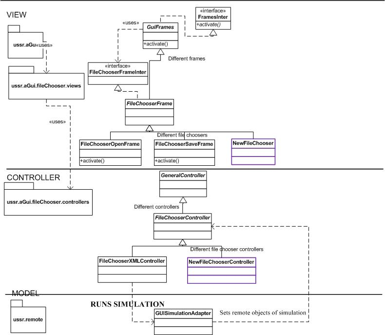

Contains implementation of File chooser in two dialog forms: Save and Open. Is supported with generic solution for filtering out different file extensions.
Implement your own classes highlighted with purple color in the design class diagram beneath.
